Данный раздел находится в активной разработке, поэтому некоторые пункты
могут быть пропущены или недописаны до окончательных изменений.
Полезные материалы
Где скачать шаблоны, программы для творчества, а также плагины к ним?
На
главной странице
в разделе ”Ресурсы" и в закрепленном сообщении в
AEChat
вы всегда можете найти наши каналы для шаблонов и программ. Например, в
PremTemp
можно найти звуки, переходы и шаблоны с помощью хештегов:
#эффекты
#переходы
#плашки
#плагин. А в
складе стройматериалов
вы можете найти конкретные программы или плагины для Windows, например:
#premierepro
#magicbullet
#borisfx
или
#twixtor
Не нашёл нужный шаблон, но у меня есть на него ссылка. Как мне его
получить?
Где взять бесплатные стоковые видео для видеороликов?
Существует множество бесплатных видео-стоков онлайн, среди которых
многие предоставляют материалы с лицензией
Creative Commons Zero (CC0), что означает возможность
использования их в своих коммерческих проектах, не указывая авторство.
Перед использованием материалов, необходимо внимательно ознакомиться с
условиями использования на каждом конкретном ресурсе. Ниже перечислены
популярные источники видео:
Некоторые ресурсы могут быть заблокированы на территории РФ или других
стран, используйте
обходы
для доступа на данные ресурсы.
Как найти шрифт по фото?
Вы можете использовать сервисом
LikeFont
для определения шрифта по фотографии. Этот сервис способен распознавать
шрифты как на латинице, так и на кириллице. Как начать им пользоваться?
Просто зайдите на сайт и загрузите своё изображение с помощью проводника
или
Ctrl + V
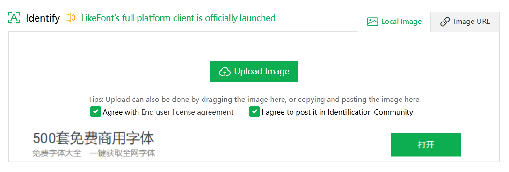
Главная страница LikeFont
Учтите, что по умолчанию на странице стоит галка на
I agree to post it in Identification Community, которая
выкладывает ваш скриншот на общее обозрение. Уберите галочку, если
вы не хотите выкладывать скриншот.
Предположим, что на вход мы дали определённый скриншот. Но вот незадача:
он неконтрастный и весь контент сливается. Что же делать?
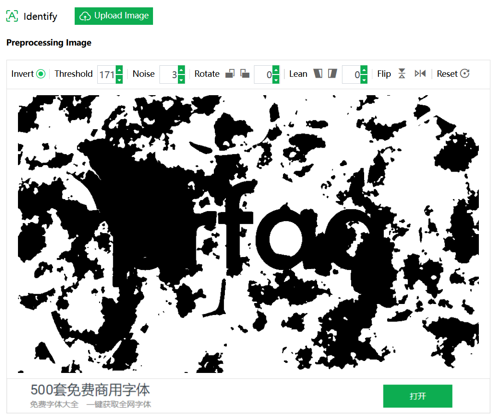
Пример плохого исходника
Для этого нужно обработать изображения. Необязательно лезть в Photoshop
и что-то там делать, ведь на сайте уже есть инструменты для обработки
изображения, например Threshold. Мы его повышаем до
максимально возможного значения, чтобы текст стал более читабельным.
Также есть инструменты для поворота, отзеркаливания и наклона
изображения.
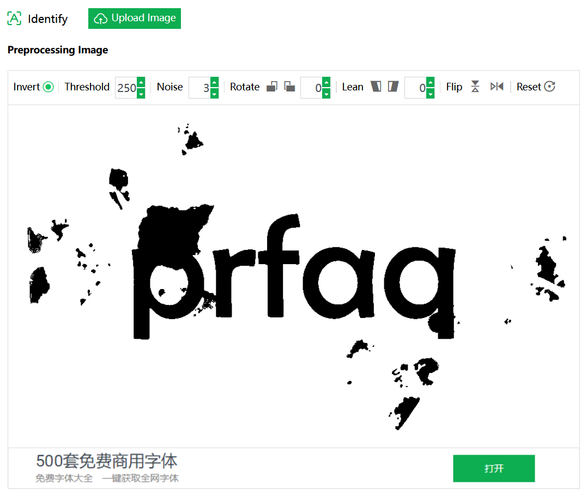
Изображение после обработки средствами сайта
Как мы видим, Threshold помог, но не сильно, так как фрактальный шум по
яркости совпал с яркостью текста. Но не унываем, у нас есть как минимум
три чистых буквы. После обработки пролистываем страницу ниже и мы видим
несколько изображений к которым нужно вписать букву.
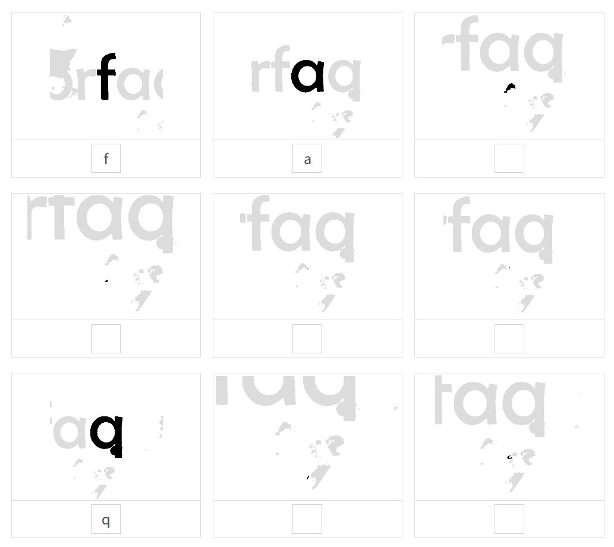
Если на изображении нет буквы или символа, то такие ячейки можно
пропустить
Чем больше вы впишете букв, тем лучше будет результат распознавания
шрифта!
После того как вы вписали буквы, нажмите на Identify Now и
сервис начнёт распознавать шрифт, а затем выдаст результат.
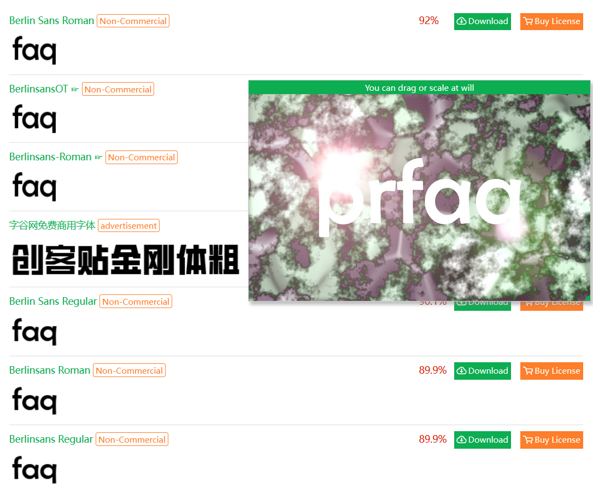
Результат распознавания шрифта
В моём примере был использован шрифт Berlin Sans FB и с его
нахождением сервис справился прекрасно.
Хочу влиться в Premiere Pro, с чего мне начать?
Если вы только скачали программу и не знаете как в ней работать, то
посмотрите плейлист
Азбука Premiere Pro
от
Ильи Зернова. Хоть и курс записан в Premiere Pro 2019 года, глобальных отличий от
новых версий нет, кроме интерфейсов создания и рендера проекта.
Какой правильный пайплайн для использования чужих исходников в проекте?
Прежде чем начать работать в программе, расположите ваши исходники в
отдельный диск или папку, а не на рабочем столе или в системных файлах.
Структурирование - основа дальнейшей работы.
Затем узнайте о ваших исходниках - в каком кодеке, цветовом пространстве
или FPS. Для этого на вашем ПК должна быть установлена программа
MediaInfo. После его установки в контекстном меню проводника появится пункт для
открытия файла в этой программе. Желательно для лучшего отображения
информации использовать вид Tree. Оттуда нам нужно узнать пять главных
параметров: разрешение, переменный или постоянный FPS, кодек и цветовое
пространство.
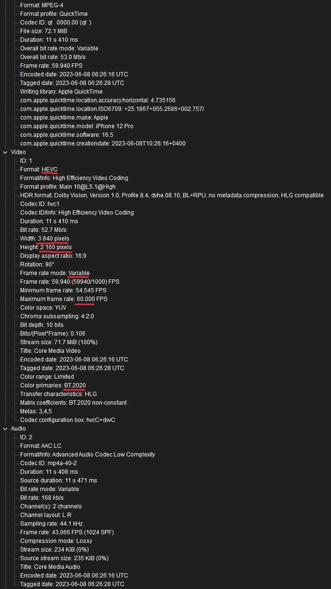
Пример исходника, открытого через MediaInfo
Если у вас видео с постоянным FPS, цветовое пространство является
Rec.709, а исходники были записаны на адекватную камеру, то
радуемся жизни и спокойно импортируем в композицию и работаем с ними.
Если у вас видео с переменным (Variable) FPS, цветовое пространство
является Rec.2020, а исходники были записаны на iPhone, то
это полный п%@#!ц. Почему? Потому что их нужно привести в порядок и для
этого нам поможет сторонняя программа
Shutter Encoder.
После установки программы, нужно его запустить и закинуть ваши
исходники, можно даже целую папку.
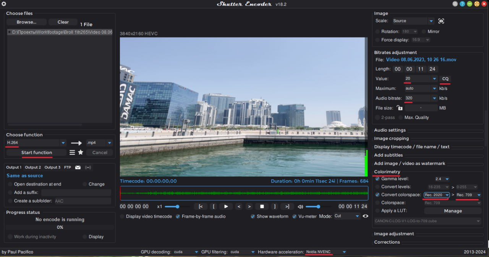
Окно Shutter Encoder с настройками для конвертации цветового профиля
При первом запуске Shutter Encoder вам может показаться, что интерфейс
слишком сложен, но это не совсем так. Как правило, пользователю нужно
выполнить семь действий:
Выбрать кодек, который нам нужен. Чаще всего используют Prores 422,
DNxHR или H.264.
Выбрать режим кодирования - с помощью фиксированного битрейта или
квантирования (CQ). Для этого достаточно нажать два раза на кнопку VBR
в правой части программы.
Установить значение CQ, если вы всё-таки выбрали квантирование в
качестве режима кодирования. Как правило, значение 20 или 23 будет
достаточно, чтобы сохранить качество, при этом получить адекватный
вес. Чем ниже значение CQ, тем лучше качество видео, но больше вес.
Установить битрейт для аудио, достаточно установить значение 320
Кбит/с.
Изменить цветовое пространство. Для этого нужно перейти во вкладку
Colorimetry или
Преобразовать цветовое пространство и установить галочку
на Convert Colorspace или Конвертировать.
Затем установите первым значением ваш цветовой профиль, который указан
в MediaInfo (для iPhone это обычно Rec.2020). Вторым значением
установите Rec.709.
Если у вас видеокарта от Nvidia, то установите галочку на Hardware
Acceleration и укажите там Nvidia NVENC
Нажать кнопку Start Function
Если вы не указывали папку для выходных файлов, то файлы сохранятся в
папку, где уже были исходники. После сохранения исходников вы можете их
импортировать в Premiere Pro и начать работу.
Импортировал видео, записанное на iPhone или на камеру с HLG, а оно
слишком пересвеченное
Для решения этой проблемы установите Premiere Pro 23.2 и выше, затем в
настройках Sequence активируйте опцию Auto Tone Map Media и
работайте дальше.
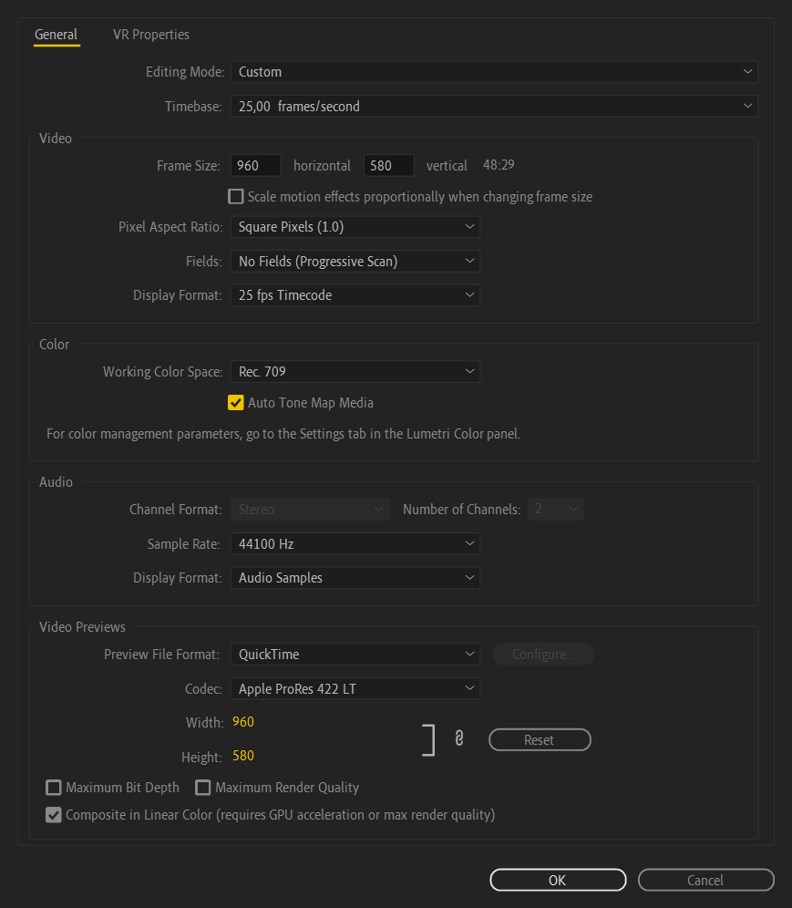
Настройка Auto Tone Map в Premiere Pro
Или же перекодируйте ваши исходные файлы в другой цветовой профиль, об
этом мы уже писали в предыдущем пункте.
Как импортировать исходники, которые не поддерживает Premiere Pro?
Попробуйте использовать плагин
Autokroma Influx. Он облегчает импорт некоторых файлов, которые не поддерживаются в
Premiere Pro, After Effects или Media Encoder.
Почему у меня, б%@#ь, лагает Premiere Pro?
Никто не может назвать конкретную причину этого явления, ведь всё
упирается в то, что вы делаете в вашем проекте.
Первое, что можно посоветовать перед тем как начать работу - создать
прокси для ваших исходников или перекодировать их в монтажный кодек,
чтобы не нагружать лишний раз ваш ПК.
Если вы видите на вашем таймлайне жёлтые или красные полосы, то при
проигрывании предпросмотра вы заметите лаги. Это связано с тем, что на
клипе по-любому используется ресурсоёмкий эффект или переход и его надо
закэшировать. Для этого перейдите в
Sequence > Render In to Out и дождитесь конца
пререндера. После этого ваш предпросмотр будет закэширован в памяти и вы
можете просмотреть его без лагов.
Есть ли аналог FX Console для Premiere Pro?
Да, он существует. Называется
Excalibur. Он позволяет применять эффекты, пресеты и переходы с помощью
всплывающего меню. По умолчанию плагин работает с комбинацией клавиш
Alt+Space, но в настройках плагина вы всегда сможете
поменять на удобное вам значение.
Куда пропала настройка Timeline в Preferences?
Данный пункт пропадает на нелицензированных версиях Premiere Pro. Его
можно вернуть простым входом в аккаунт Adobe. Не бойтесь, лицензия не
слетит, если у вас изначально были прописаны hosts для блокировки поиска
лицензии (при установке репака от KpoJluk - этот пункт делается
автоматиечски).
В последних версиях Premiere Pro баг с исчезновением этого пункта по
идее исправили, но не исключено повторное появление этой проблемы в
дальнейшем.
Как передать проект с исходниками другому человеку?
Для этого перейдите в File > Project Manager, выберите
путь для сохранения в Destination Path и нажмите OK
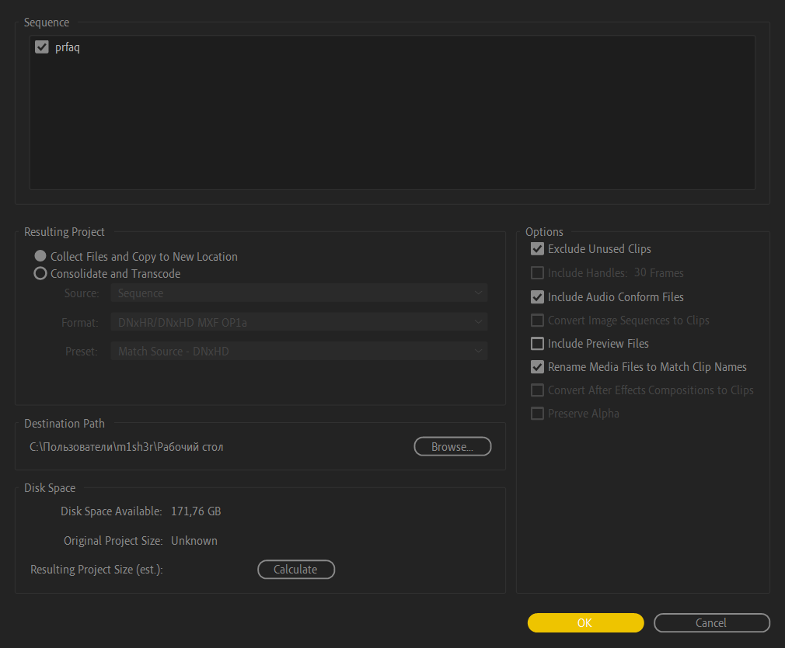
Окно Project Manager
После сохранения, перейдите в папку куда вы сохранили проект и создайте
архив с помощью
WinRAR
для Windows или
keka
для macOS. После создания архива вы сможете отправить проект с
исходниками другому человеку.
Как установить пакеты для транскрибации речи в текст?
Для этого перейдите в
склад стройматериалов
и найдите посты под хештегом #speechtotext для вашей версии
Premiere Pro
Внимательно смотрите описание записей: версии языковых пакетов, не
предназначенные для вашей версии Premiere Pro, не будут работать. То
есть вы не можете установить языковой пакет предназначенный для Premiere
Pro версии 24.3 на Premiere Pro версии 24.4 и наоборот.
Частые ошибки
This effect requires GPU acceleration
Попробуйте включить в настройках проекта ускорение с помощью GPU. Для
этого перейдите в File > Project Settings > General и
переключите в Renderer пункт на
Mercury Playback Engine GPU Acceleration (CUDA/OpenCL)
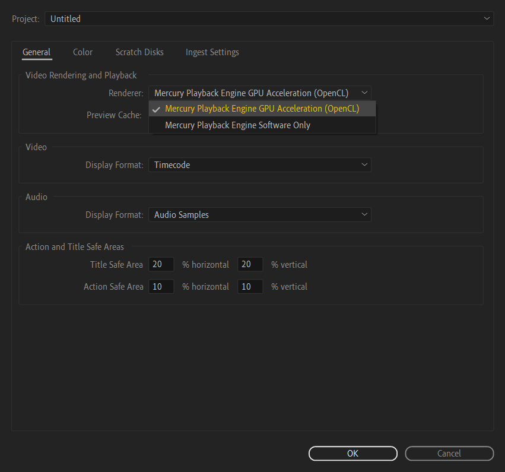
Настройки проекта в Premiere Pro
Media offline или Медиаданные в автономном режиме
Данная псевдо-ошибка возникает в случаях, когда вы удалили с диска
исходники или перенесли их. Для этого просто переподключите их в окне
Project, выбрав исходник и нажав по нему правой кнопкой мыши. Затем
выберите пункт Link Media или Replace Footage
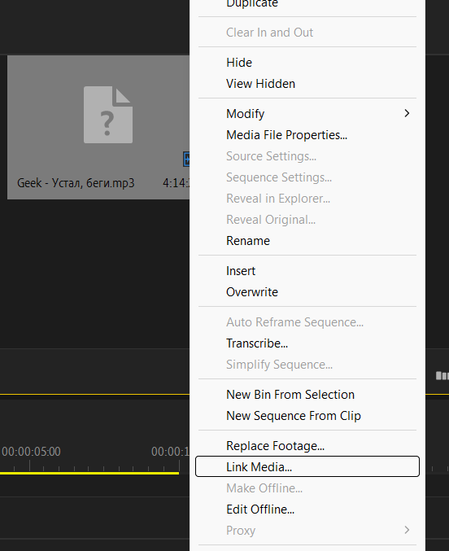
Контекстное меню у исходника в окне Project
Если вы выбрали пункт Link Media, то в новом окне нажмите
на кнопку Locate и укажите новое местоположение ваших
исходников.
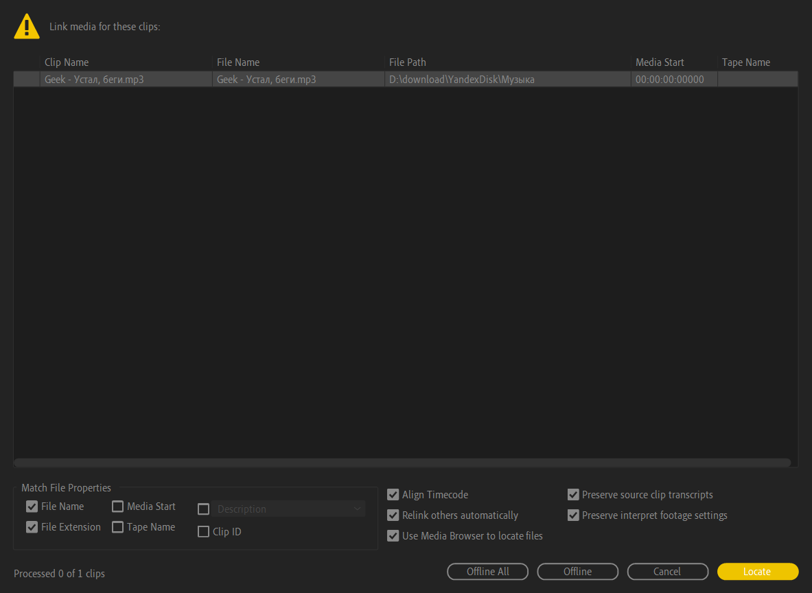
Окно Link Media
Если вы выбрали пункт Replace Footage, то откроется
проводник для выбора нового файла. Укажите его и файл подхватится, затем
вы сможете продолжить работу.
Пропала визуализация аудио на таймлайне
Попробуйте очистить .peak-файлы в настройках Premiere Pro. Для этого
перейдите в Edit > Preferences > Media Cache и
нажмите Delete у Remove Media Cache Files.
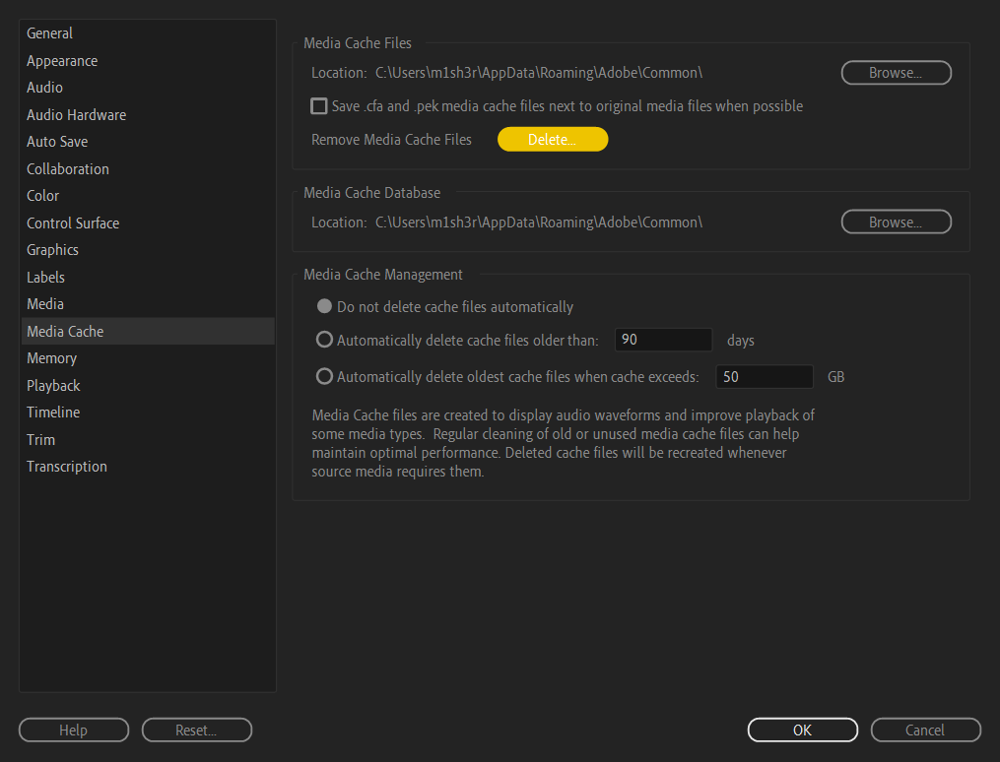
Очистка кэша медиа-файлов
Если это не помогло, то попробуйте отправить вашу аудиодорожку в
Audition, сохранить его там и вернуться в Premiere Pro. Программа
сделает замену аудиодорожки на другую и соответственно пересчитает
предпросмотр.
Пропал звук при предпросмотре
Проблемы с установкой
Про рендер
Как правильно выводить видео из Premiere Pro
В рендере нюансов и технических тонкостей много. Предположим, что ваш
заказчик хочет качественное видео с минимальным весом, в цветовом
пространстве
Rec.709 и кодеке H.264 или H.265
Вы можете вывести видео из Premiere Pro с помощью нативного кодека
H.264.
Начнём с самого простого: при нажатии на Ctrl + M программа
по умолчанию предложит вам вывести в
Если результат от стандартного H.264 не понравился, то на помощь
приходят AfterCodecs или Voukoder
Существует интересный способ для вывода с помощью Pre-render для
последующего сокращения времени рендера при незначительных правках от
заказчика. Для начала откройте настройки секвенции, перейдя вSequence > Sequence Settings, затем переместитесь в раздел Video Previews и укажите
кодек для пре-рендера. В нашем случае мы выберем
Apple Prores 422, но вы можете указать любой другой.
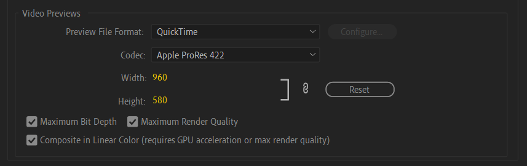
Настройка кодека для Video Preview
Выбор кодека в Video Previews должен совпадать с кодеком для финального
рендера, чтобы фишка с быстрым рендером сработала. То есть если вы
выбрали в Video Previews кодек Apple Prores 4444, то и в
Ctrl + M тоже должен стоять кодек
Apple Prores 4444
После того как мы выбрали кодек для пре-рендера, нужно указать точку In
в начале вашего таймлайна и точку Out в конце с помощью кнопок
I и O соответственно или очистите выделение с
помощью Ctrl + Shift + X. Затем перейдите в Seuqence и
нажмите на Render In to Out.
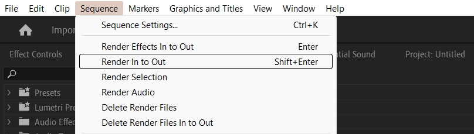
Кнопка для начала пре-рендера в Premiere Pro
Какой битрейт лучше ставить для вывода в социальные сети?
Каждая социальная сеть пережимает исходное видео под свои параметры,
чтобы уместить их на своих серверах. Порой установка слишком низкого
битрейта или других неверных параметров только усугубляет положение и
портит ваше видео.
Качество вашего видео будет зависеть от происходящего на экране. Если вы
монтируете "говорящую голову" или видео с минимальными движениями, то
будет достаточно установить битрейт 5-10 Мбит/с для того, чтобы вы
смогли сохранить все детали на видео. Если вы монтируете динамичную
сцену, или сцену с кучей маленьких частиц, то и 150 Мбит/с может не
хватить, чтобы сохранить все детали. Почему так происходит, объясняется
в видео ниже:
Самое главное правило, которое применяется для всех видео: сохраняйте
частоту кадров исходного видео, она не должна отличаться после
кодирования. Если вы монтируете видео с разным FPS, то выводите видео с
наименьшим из них или интерпретируйте исходники в одну частоту кадров. В
противном случае вы наткнетесь на пропуски кадров или другие неприятные
последствия.
Прежде чем загрузить куда-нибудь контент с чересстрочной разверткой,
сделайте ее прогрессивной. Например, контент в формате
1080i60
следует перевести в
1080p30
, то есть 60 чересстрочных полукадров в секунду следует заменить 30
прогрессивными кадрами в секунду.
Для того чтобы опубликовать видео на
YouTube, оно должно соответствовать требованиям площадки:
Видео должно иметь переменный или постоянный битрейт, ограничения на
него нет, но лучше соблюдать таблицу битрейтов
Контейнер должен быть
.mp4
Видеокодек -
H.264
, аудиокодек -
AAC
с частотой дискретизации 48 кГц или 96 кГц.
Видео должно содержать стерео или 5.1 каналы для аудио
Разрешение
Битрейт (24, 25, 30 FPS)
Битрейт (48, 50, 60 FPS)
8K
80–160 Мбит/с
120–240 Мбит/с
2160p (4К)
35–45 Мбит/с
53–68 Мбит/с
1440p (2К)
16 Мбит/c
24 Мбит/c
1080p
8 Мбит/c
12 Мбит/c
720p
5 Мбит/c
7,5 Мбит/c
480p
2,5 Мбит/c
4 Мбит/c
360p
1 Мбит/c
1,5 Мбит/c
Таблица рекомендуемого битрейта для вывода в YouTube при использовании
SDR
Разрешение
Битрейт (24, 25, 30 FPS)
Битрейт (48, 50, 60 FPS)
8K
100–200 Мбит/с
150–300 Мбит/с
2160p (4К)
44–56 Мбит/с
66–85 Мбит/с
1440p (2К)
20 Мбит/с
30 Мбит/с
1080p
10 Мбит/c
15 Мбит/с
720p
6,5 Мбит/с
9,5 Мбит/с
480p
Не поддерживается
Не поддерживается
360p
Не поддерживается
Не поддерживается
Таблица рекомендуемого битрейта для вывода в YouTube при использовании
HDR
Для TikTok требования следующие:
Площадка даёт возможность загрузить видео до 250 Мб, если вы
выкладываете с устройства на iOS и до 75 Мб, если вы выкладываете с
устройства на Android.
Контейнер должен быть
.mp4
или
.mov
В качестве видеокодека должно использоваться
H.264
Разрешение
Битрейт (24, 25, 30 FPS)
1080p
5-8 Мбит/с
720p
2,5-5 Мбит/с
Таблица рекомендуемого битрейта для вывода в TikTok
Для Instagram* необходимо соблюдать следующие условия:
Соотношение сторон видео должно быть
4:5
,
16:9
или
4:3
, если вы собираетесь выкладывать в обычный пост.
Соотношение сторон видео должно быть
9:16
, если выкладываете видео для IGTV, Stories или Reels.
Видео может содержать любое количество FPS, но желательно
придерживаться стандарту 24, 25 или 30 FPS, так как при
использовании видео с 60 FPS нужно больше битрейта, а Instagram*
любит пережимать видео под себя.
Разрешение
Битрейт (24, 25, 30 FPS)
1080p
5 Мбит/с
720p
2,5-4 Мбит/с
Рекомендуемый битрейт для вывода в Instagram*
*Instagram и Meta признаны экстремистскими организациями и запрещены на
территории Российской Федерации.
Что делать, если рендер зависает на определённом моменте?
Почему после рендера всё смещается влево или вправо?
Это один из старых багов программ версий 23.1, 23.2, 23.3, 23.4 и 23.5
при использовании Media Encoder в качестве рендера или использовании
композиций After Effects в Premiere Pro. Для решения проблемы просто
обновите все Premiere Pro, After Effects и Media Encoder до 23.6 или
выше.
Почему, если я создал субтитры, их не видно после рендера?
По умолчанию в Premiere Pro выключен пункт Captions в
настройках рендера.
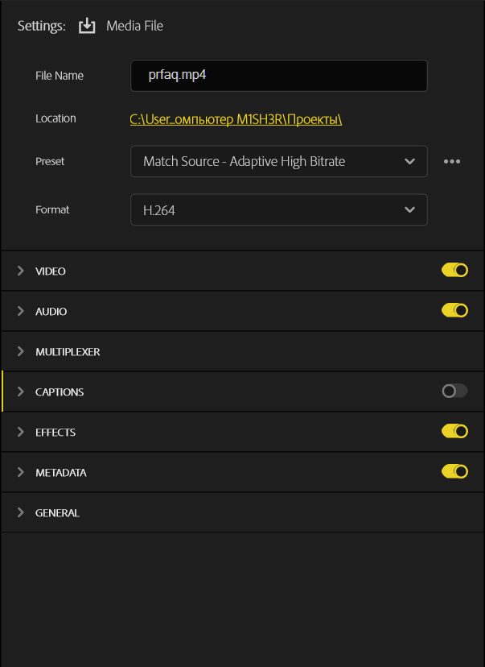
Рендер субтитров в Premiere Pro
Для этого, включите его и повторите рендер снова. Чтобы не забывать его
включать в следующий раз - можно создать пресет с настройками для
рендера